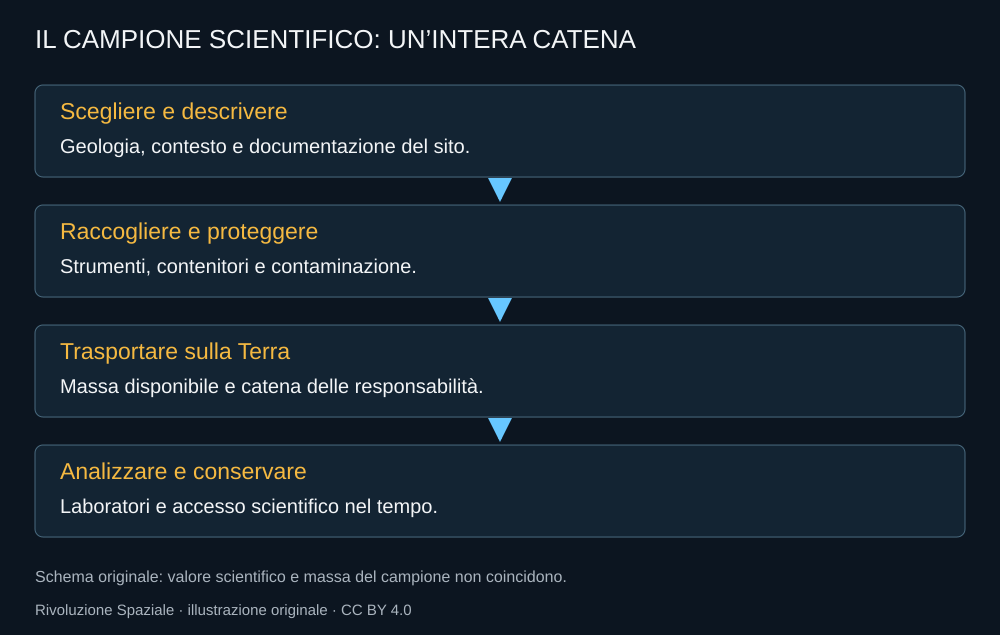
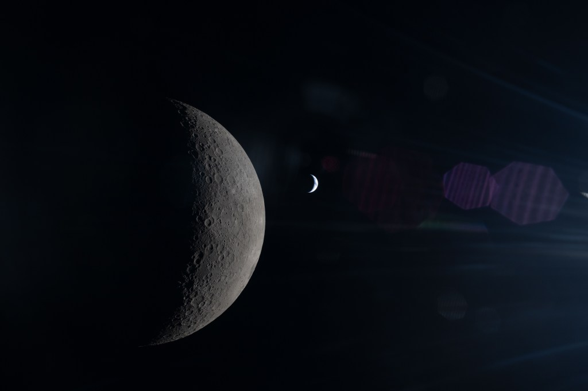

La Luna non è interessante soltanto perché è una destinazione per astronauti. Conserva una storia geologica e un ambiente che possono aiutare a capire il sistema Terra–Luna e il Sistema solare. L’esplorazione umana ha valore quando permette osservazioni e campioni che rispondono a domande precise.
Prima delle persone arrivano strumenti
Il programma CLPS acquista servizi commerciali di consegna di carichi scientifici e tecnologici. È distinto da HLS: portare strumenti senza equipaggio non equivale a qualificare un lander per astronauti. La sperimentazione robotica può comunque fornire dati utili alle operazioni future.
Una consegna deve essere letta attraverso il suo risultato. Partenza, trasferimento e contatto sulla superficie sono fasi diverse; anche la durata degli apparati dopo l’arrivo conta. Un lander può raggiungere la Luna e avere una capacità di lavoro inferiore a quella prevista.
Il rischio commerciale non sparisce
Acquistare un servizio può permettere più iniziative e ridurre alcuni oneri dello sviluppo pubblico. Non rende ogni missione affidabile. La maturazione dei fornitori richiede una serie di esperienze e la capacità di correggere problemi senza ripeterli.
Per il programma scientifico importa anche la continuità dei dati. Se uno strumento viene perduto, una domanda può restare senza risposta. Il costo di una missione non si esaurisce nell’oggetto materiale: include l’opportunità scientifica che aveva preparato.
Presentazione NASA del programma robotico CLPS. Apri il video.
Gli astronauti portano contesto
Una persona può riconoscere una relazione sul terreno, scegliere un campione e cambiare una decisione in base a ciò che osserva. Questo vantaggio richiede preparazione e documentazione. Una roccia senza contesto può perdere parte del proprio valore scientifico.

Contenitori e contaminazione sono parte del problema. Alcune informazioni possono essere alterate dalle condizioni di raccolta o conservazione. Il ritorno deve mantenere la relazione fra campione, luogo e metodo.
Una base può cambiare la durata della scienza
Operazioni ripetute permettono di seguire fenomeni nel tempo, tornare in luoghi e lasciare apparati. La presenza continuativa ha però un costo e non è necessaria per ogni domanda. Un’architettura efficace deve scegliere quali attività beneficino davvero di persone e quali possano essere svolte da strumenti robotici.
La geografia delle risorse non dovrebbe assorbire tutto il programma scientifico. Cercare acqua è importante per alcune operazioni; capire la storia del terreno ha un valore che non dipende dalla possibilità di trasformarlo in propellente.
Il risultato continua sulla Terra

Laboratori e comunità scientifica devono poter lavorare sui dati. Una missione non completa il proprio compito semplicemente producendo immagini belle. Metodi, accesso e conservazione trasformano il viaggio in conoscenza condivisa.
È qui che il programma può lasciare un patrimonio oltre il calendario politico. Una risorsa scientifica ben documentata resta utile anche quando l’architettura della missione successiva cambia.
Fonti pubbliche e tracce
- NASA, Commercial Lunar Payload Services. Servizi robotici di consegna, diversi dai lander umani HLS.
- NASA Science, CLPS Deliveries. Stati delle singole consegne, da consultare senza confondere partenze e allunaggi.
- NASA, Moon Base Architecture User’s Guide, aprile 2026. Guida di architettura e priorità: progetto, non base completata.